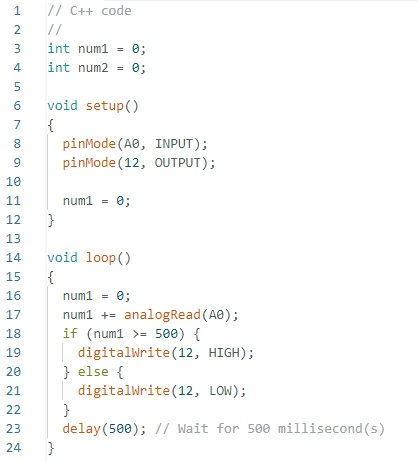

A linguagem de programação C++ é uma das mais populares para desenvolvimento em plataformas Arduino. C++ é uma linguagem de programação de alto nível que permite a programação orientada a objetos e é amplamente utilizada para o desenvolvimento de software em uma variedade de dispositivos eletrônicos.
No contexto do Arduino, o C++ oferece uma forma eficiente de escrever código que pode interagir diretamente com o hardware. Com ele, os desenvolvedores podem controlar sensores, motores e outros componentes eletrônicos, facilitando a criação de projetos de robótica, automação e prototipagem rápida.
No exemplo abaixo, um LED é controlado utilizando um código simples em C++ no IDE Arduino.
